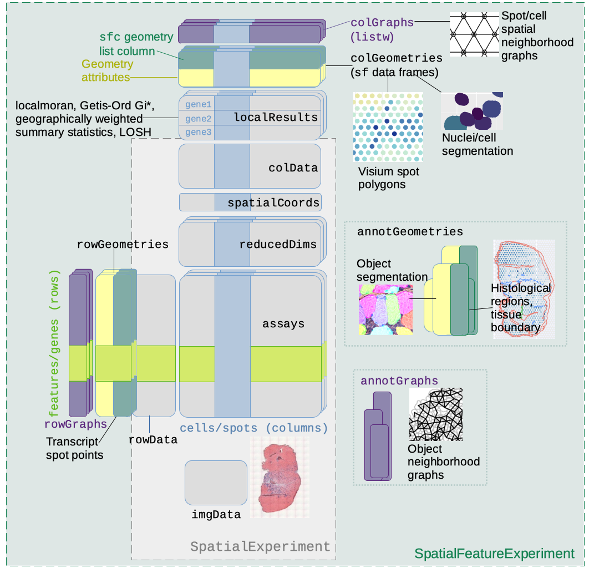

Installation
This package is available on Bioconductor version 3.16 and above. It can be installed with
if (!requireNamespace("BiocManager", quietly = TRUE))
install.packages("BiocManager")
BiocManager::install("SpatialFeatureExperiment")Documentation can be accessed on this website.
Introduction
SpatialFeatureExperiment (SFE) is a new S4 class built on top of SpatialExperiment (SPE). SpatialFeatureExperiment incorporates geometries and geometry operations with the sf package. Examples of supported geometries are Visium spots represented with polygons corresponding to their size, cell or nuclei segmentation polygons, tissue boundary polygons, pathologist annotation of histological regions, and transcript spots of genes. Using sf, SpatialFeatureExperiment leverages well-established and optimized C++ libraries underlying sf for geometry operations, including algorithms for determining whether geometries intersect, finding intersection geometries, buffering geometries with margins, etc. A schematic of the SFE object is shown below:

Below is a list of SFE features that extend the SPE object:
-
colGeometriesaresfdata frames associated with the entities that correspond to columns of the gene count matrix, such as Visium spots or cells. The geometries in thesfdata frames can be Visium spot centroids, Visium spot polygons, or for datasets with single cell resolution, cell or nuclei segmentations. MultiplecolGeometriescan be stored in the same SFE object, such as one for cell segmentation and another for nuclei segmentation. There can be non-spatial, attribute columns in acolGeometryrather thancolData, because thesfclass allows users to specify how attributes relate to geometries, such as “constant”, “aggregate”, and “identity”. See theagrargument of thest_sfdocumentation. -
colGraphsare spatial neighborhood graphs of cells or spots. The graphs have classlistw(spdeppackage), and thecolPairsofSingleCellExperimentwas not used so no conversion is necessary to use the numerous spatial dependency functions fromspdep, such as those for Moran’s I, Geary’s C, Getis-Ord Gi*, LOSH, etc. Conversion is also not needed for other classical spatial statistics packages such asspatialregandadespatial. -
rowGeometriesare similar tocolGeometries, but support entities that correspond to rows of the gene count matrix, such as genes. A potential use case is to store transcript spots for each gene in smFISH or in situ sequencing based datasets. -
rowGraphsare similar tocolGraphs. A potential use case may be spatial colocalization of transcripts of different genes. -
annotGeometriesaresfdata frames associated with the dataset but not directly with the gene count matrix, such as tissue boundaries, histological regions, cell or nuclei segmentation in Visium datasets, and etc. These geometries are stored in this object to facilitate plotting and usingsffor operations such as to find the number of nuclei in each Visium spot and which histological regions each Visium spot intersects. UnlikecolGeometriesandrowGeometries, the number of rows in thesfdata frames inannotGeometriesis not constrained by the dimension of the gene count matrix and can be arbitrary. -
annotGraphsare similar tocolGraphsandrowGraphs, but are for entities not directly associated with the gene count matrix, such as spatial neighborhood graphs for nuclei in Visium datasets, or other objects like myofibers. These graphs are relevant tospdepanalyses of attributes of these geometries such as spatial autocorrelation in morphological metrics of myofibers and nuclei. With geometry operations withsf, these attributes and results of analyses of these attributes (e.g. spatial regions defined by the attributes) may be related back to gene expression. -
localResultsare similar toreducedDimsinSingleCellExperiment, but stores results from univariate and bivariate local spatial analysis results, such as fromlocalmoran, Getis-Ord Gi*, AND local spatial heteroscedasticity (LOSH). Unlike inreducedDims, for each type of results (type is the type of analysis such as Getis-Ord Gi*), each feature (e.g. gene) or pair of features for which the analysis is performed has its own results. The local spatial analyses can also be performed for attributes ofcolGeometriesandannotGeometriesin addition to gene expression andcolData. Results of multivariate spatial analysis such as MULTISPATI PCA can be stored inreducedDims.